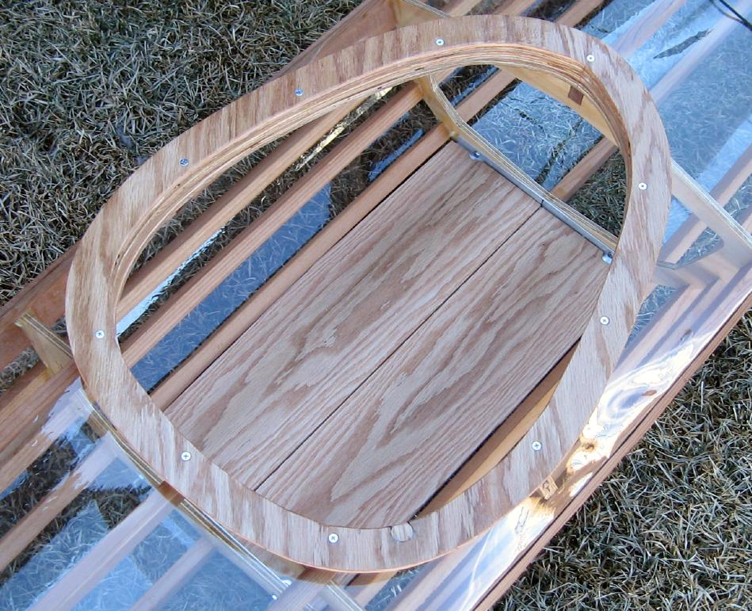

| Nikumi Coaming / Floor | Menu Previous Page Next Page |
|
 The 22inch (ID) plywood coaming consists of a coaming base plate (1"X .5"), two coaming rings ( .75" X .5"), and a coaming lip ( 1.5" X .25"). The coaming is coated with West System epoxy resin. The coaming base plate is glued to the frame but the coaming is removable ( wood screws or machine screws). |
|